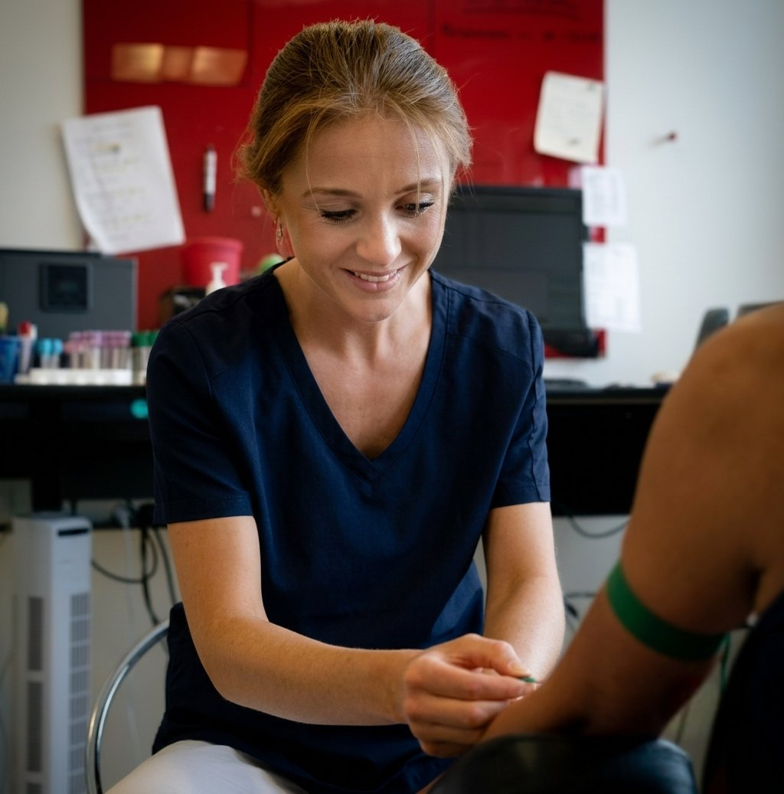

Laboratoriet
Blodprøver & EKG
Vores eget laboratorium tager blodprøver og EKG med faste tider, så du hurtigt kan komme videre med din dag.
I lægehuset
Blodprøver i laboratoriet
Blodprøver tages i vores eget laboratorium af bioanalytiker og klinikpersonale — altid efter forudgående aftale med din læge eller en speciallæge.
Book en fast tid
- Book blodprøvetagning med fast tid i Min Læge-appen eller via e-konsultation — vælg „Blodprøve“ (uden EKG).
- Skal du have taget blodprøver og EKG i forbindelse med årskontrol, bookes tiden hos sygeplejersken.
- Husk at scanne dit sundhedskort, når du ankommer.
Bemærk: Vi tager kun blodprøver, som en læge har bestilt. Er du i tvivl om, hvilke prøver du skal have taget, så kontakt os først.

Uden for huset
Blodprøver på Horsens og Vejle Sygehus
Du kan også vælge at få taget dine blodprøver i blodprøveambulatorierne på Horsens Sygehus eller Vejle Sygehus — fx hvis det passer bedre med din vej til arbejde.
- Prøverne skal være bestilt af lægen på forhånd.
- Tjek sygehusets åbningstider og eventuelle krav om tidsbestilling på sundhed.dk, inden du møder op.
- Svarene sendes automatisk til os, og du kan selv se dem på sundhed.dk eller i Min Læge-appen.
Skal du have taget en blodprøve?
Book en fast tid i Min Læge-appen — eller ring til os på hverdage kl. 9.00–14.00.